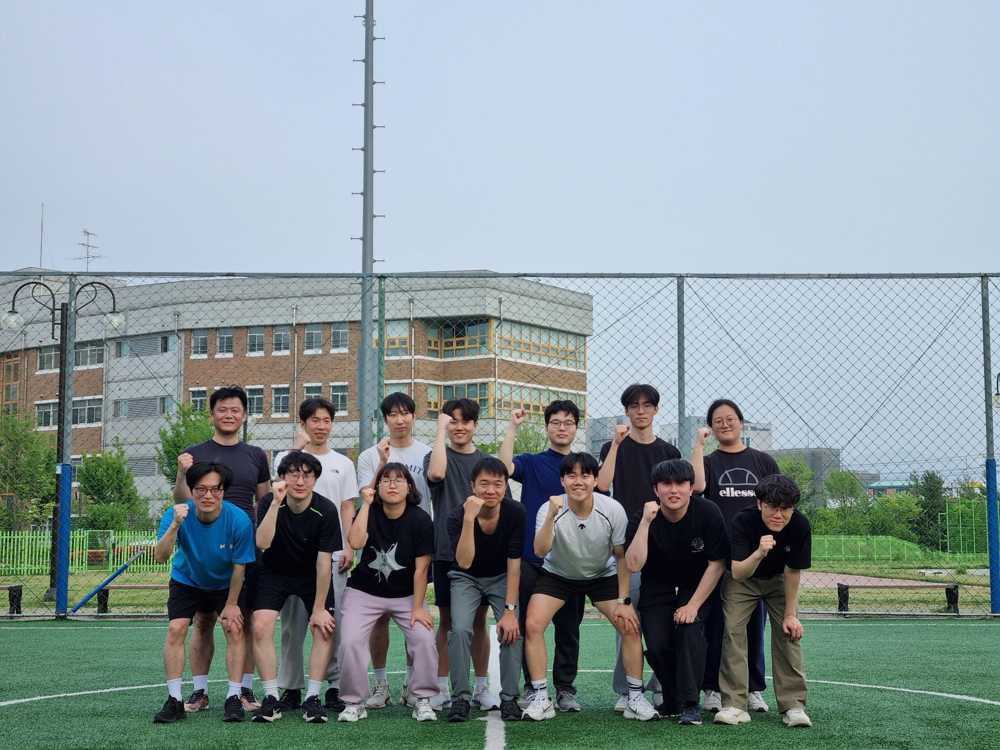
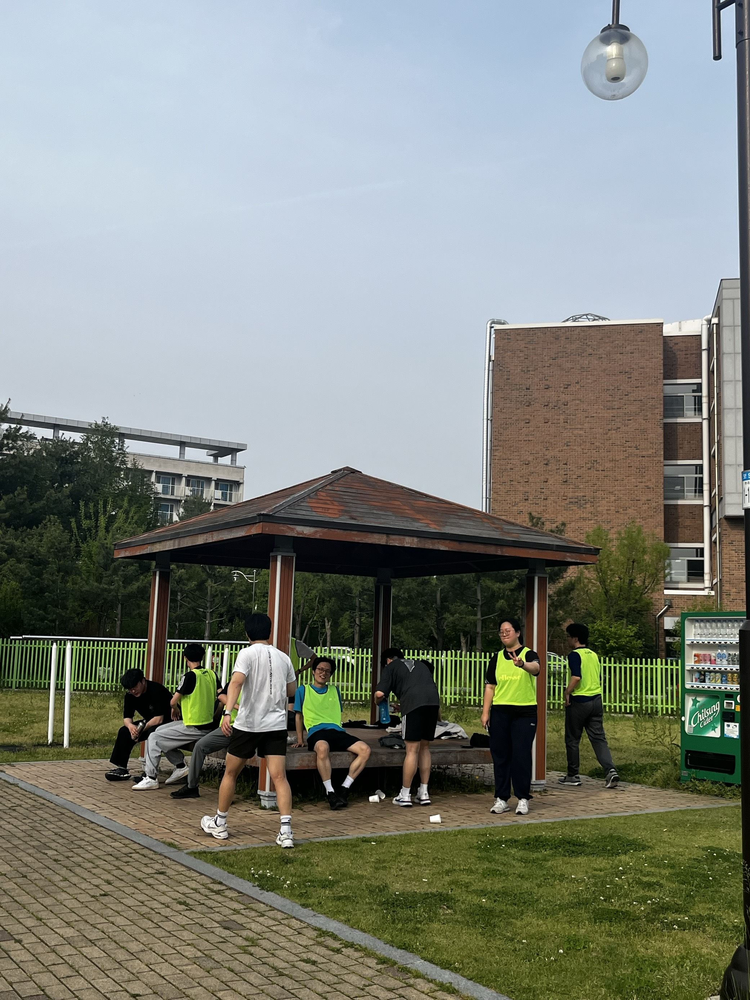
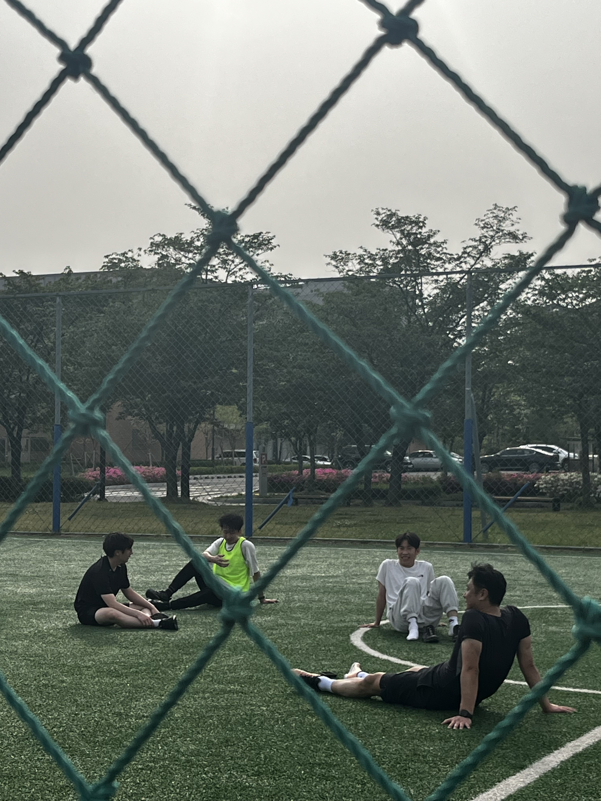
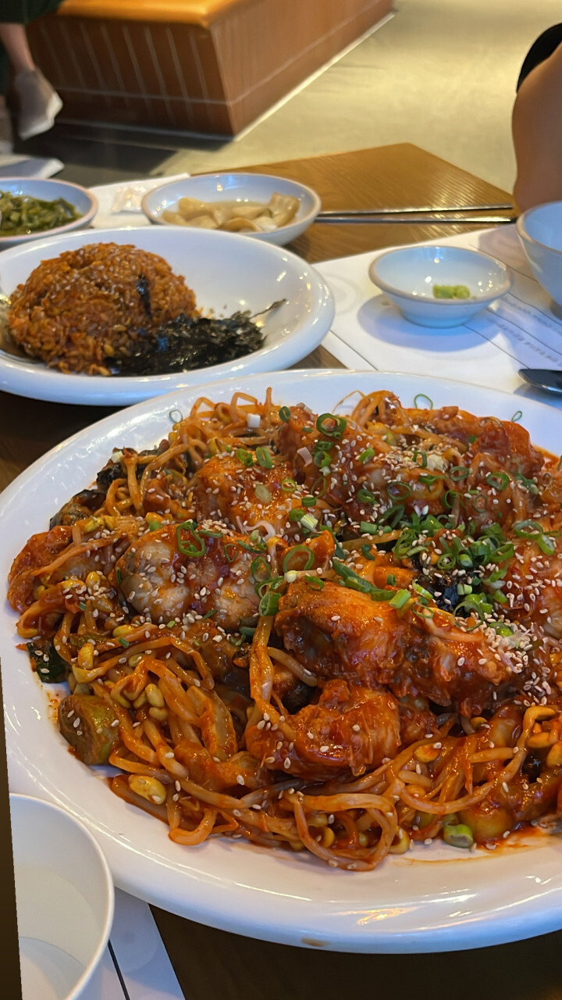

작성자: 박제현

날씨 좋은 하루 연구실에서 풋살을 하러 왔습니다. 저희 연구실은 이렇게 종종 폐쇄된 기계동 밖으로 나와 야외 활동을 하곤 합니다. 오늘 풋살에 정말 많은 연구실 분들이 참석해 주셨네요~
두 팀으로 나눠서 풋살을 진행하기로 했어요!
1팀 : 허필원 교수님, 조권승, 차명주, 성지윤, 김민석, 이현우, 김성환
2팀 : 이강우 박사님, 문선웅, 류형석, Thanh, 배성환, 박제현, 박수영, 이충범

경기 결과, 2팀이 3대 2로 승리했습니다~ 특히 두 골을 넣은 Thanh이 MVP로 선정됬습니다! 경기가 끝난 후 다들 지쳐서 정자에 앉아있는 모습입니다

경기가 끝나고도 필드에 아직 남아있으신 분들! 아직 경기에 여운이 남으셨나 봅니다

이후 저녁으로 아구찜을 먹으러 갔습니다! 풋살에 참석하지 못한 박혜원 누나도 조인하였습니다. 매콤한 아구찜이 정말 맜있었어요~
다음날 글을 쓰는 지금도 공기밥 들고가서 비비고 싶네요..
2025년 4월이 가고 있습니다.. 모두 남은 8개월이 행복한 연구실 생활이 되길!
참가자 명단: 허필원, 이강우, 조권승, 차명주, 문선웅, 류형석, 성지윤, 박혜원, Thanh, 김민석, 배성환, 박제현, 박수영, 이현우, 이충범, 김성환